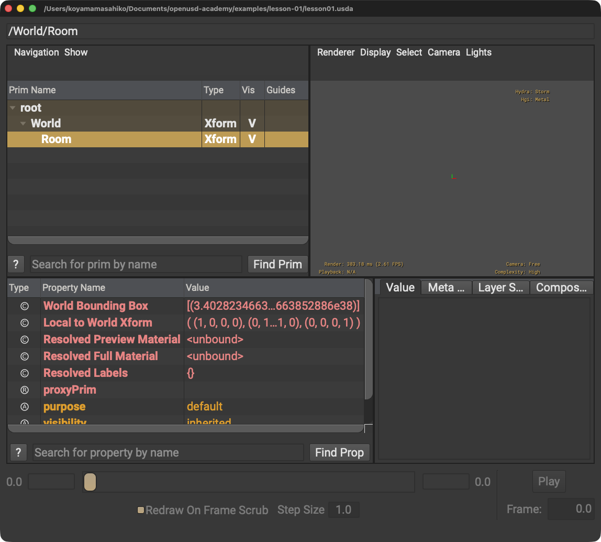

06
インデント
行の先頭に入れる空白です。この例では4個の空白でRoomがWorldの内側にあることを見やすくしています。
LESSON 01 · FOUNDATIONS
短いテキストから、OpenUSDのシーンがどう階層として表されるかを、一文字ずつ確かめます。
01 · 今日これだけ
def Xform "World" は、Worldという名前のXform型Primを定義する記述です。波括弧の内側に別のPrimを書くと、そのPrimは子になります。
02 · 直感的な理解
公式情報に基づく説明
NVIDIA Learn OpenUSDでは、Stageは合成されたシーングラフを提示するもの、PrimはOpenUSDシーンの構成要素と説明されています。Primは階層に整理され、各Primはシーングラフ内で位置を示すPathを持ちます。
03 · USDA example
ファイル名を lesson01.usda とします。先頭の番号は説明用であり、実際のファイルには書きません。
1#usda 1.0
2
3def Xform "World"
4{
5 def Xform "Room"
6 {
7 }
8}
root → World → Roomを確認できます。Xformだけなのでビューポートに形状は表示されません。04 · 一行ずつ読む
#usda 1.0このテキストがUSDA形式であることを示すヘッダーです。
内容はありません。人が読みやすいよう、ヘッダーとPrim定義を離しています。
def Xform "World"def、空白、Xform、空白、二重引用符で囲んだWorldの順です。Worldという名前のXform型Primを定義します。
{左波括弧です。3行目で始めたWorld Primの内容が、ここから始まります。
def Xform "Room"先頭に4個の空白があります。Roomという名前のXform型Primを、Worldの内側に定義します。
{Room Primの内容の開始です。左波括弧の前にも4個の空白があります。
}右波括弧です。Room Primの内容がここで終わります。
}World Primの内容がここで終わります。先頭に空白がないため、4行目の左波括弧と同じ深さだと見分けられます。
05 · Diagram
/World/World/Room06–12 · 記法を分解する
06
行の先頭に入れる空白です。この例では4個の空白でRoomがWorldの内側にあることを見やすくしています。
07
{ }{は左波括弧、}は右波括弧です。左でPrimの内容を始め、対応する右で終えます。2つを合わせて一組です。
08
" "半角の二重引用符でPrim名を囲みます。開始側と終了側の2つが必要です。日本語入力の曲がった引用符 “ ”とは別の文字です。
09
defdefineの短縮形です。NVIDIAの説明では、現在のLayerでPrimを定義し、そのPrimがStage上に具体的に定義されて存在することを示します。
10
XformPrimの型です。Xformはtransformを表し、移動・回転・拡大縮小などの変換データを保持して子Primに適用できるPrimです。この例では変換値をまだ書いていません。
11
WorldとRoomが名前です。名前は階層内のPrimを識別し、Pathの一部分になります。Xformは名前ではなく型です。
12 · PATH
/World/Room を一文字ずつ読む/World/WorldはWorld PrimのPathです。/Room13 · Python
from pxr import Usd
stage = Usd.Stage.CreateNew("lesson01.usda")
stage.DefinePrim("/World", "Xform")
stage.DefinePrim("/World/Room", "Xform")
stage.Save()上から順に、USDモジュールを読み込み、新しいStageを作り、Worldを定義し、その子にRoomを定義して、最後に保存します。
14 · USDA → Python mapping
USDA
#usda 1.0Python
CreateNew("lesson01.usda")`.usda`の新しいStageを作ると、保存されるテキストにUSDAヘッダーが含まれます。
USDA
def Xform "World"Python
DefinePrim("/World", "Xform")Path /World にXform型Primを定義します。
USDA
def Xform "Room"Python
DefinePrim("/World/Room", "Xform")Pathに親のWorldも書き、Roomをその子として定義します。
USDA
ファイル全体Python
stage.Save()Stageへの編集を保存します。
15 · Beginner notes
16 · Common mistakes
誤: def Xform “World”
正: 半角の二重引用符で def Xform "World" と書きます。
原因: RoomかWorldのどちらかが閉じていません。
解決策: 左波括弧2個に対して右波括弧も2個あるか、内側から順に確認します。
誤: DefinePrim("/Room", "Xform")
原因: /Roomはpseudo-rootから始まるため、RoomがWorldの子ではなくpseudo-rootの直接の子になります。
解決策: 子までの階層を含めて "/World/Room" と書きます。
#usda 1.0をPythonコメントだと思う原因: USDAとPythonで # の役割を同じだと考えています。
解決策: USDAファイル先頭では形式を示すヘッダーとして読みます。このレッスンのPythonコードには書きません。
17 · Glossary
defは現在のLayerでPrimを具体的に定義する。/ で表す。18 · Official references
一次情報の確認日: